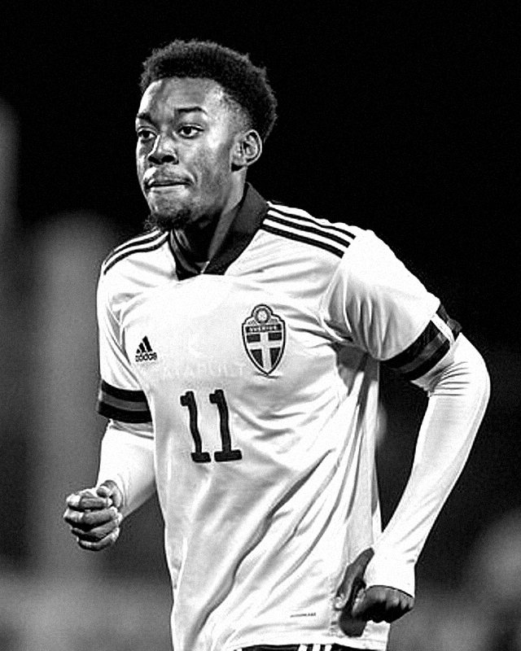

01
Malmö, les racines
Anthony David Junior Elanga naît le 27 avril 2002 à Hyllie, à Malmö. Son père, Joseph, ancien défenseur international camerounais, a joué au Malmö FF. Avec sa mère, Daniella, il lui transmet le respect, le travail, l'humilité et la constance.
Formé à l'IF Elfsborg puis au Malmö FF, il se distingue par sa vitesse. Mais déjà, il veut comprendre comment devenir meilleur, et il étudie les plus grands, à commencer par Thierry Henry.
En 1998, son père disputait la Coupe du monde avec le Cameroun.